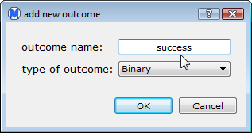
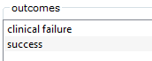

To edit an open data set, select edit on the Dataset menu. This opens the dialog shown below.
In the edit dialog, you can add or delete outcomes, follow-ups, treatment groups, studies, and covariates. For example, to add a new outcome:

